Demographic Analyses of Black Soldiers
This page provides some exploratory data analysis of Survey 144.
R EDA race relationsWho Are the Soldiers?
Survey 144 was given out to soldiers in 1944, approximately 4 years before the military was integrated. The survey was passed out to 4,678 black soldiers and focused on post-war plans and aspirations of the soldiers. We were particularly interested in how the soldiers thought their lives would be better after the war.
Age
Age was not collected on a continuous scale and was discretized into a few different age groups. We see that the overwhelming bulk of black soldiers who were survied were 20 years old with a small portion who were 19 or younger. In the meanwhile, the white soldiers had more spread to their ages with most soldiers being between the ages of 21 and 24.
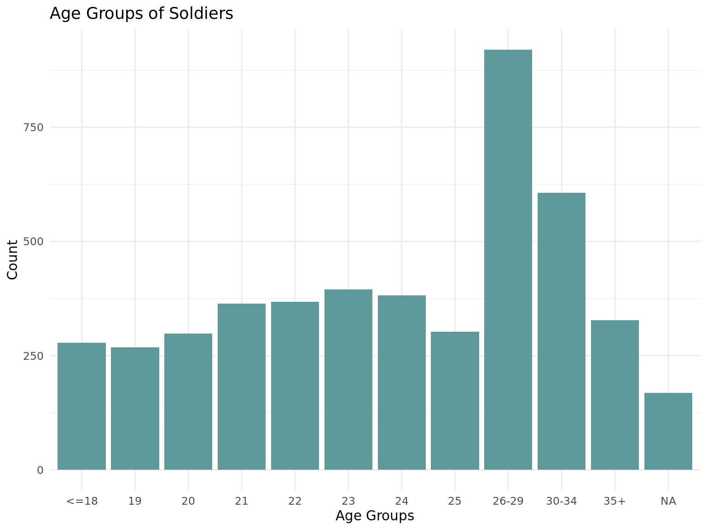
Education
If we look at education we see that the majority have hade atleast some high school or trade school. This is in contrast with the black soldiers survied in S32 who only had upto a 4th grade education. Here we see the black soldiers education is distributed similarly to the white soldeir survied in S32.
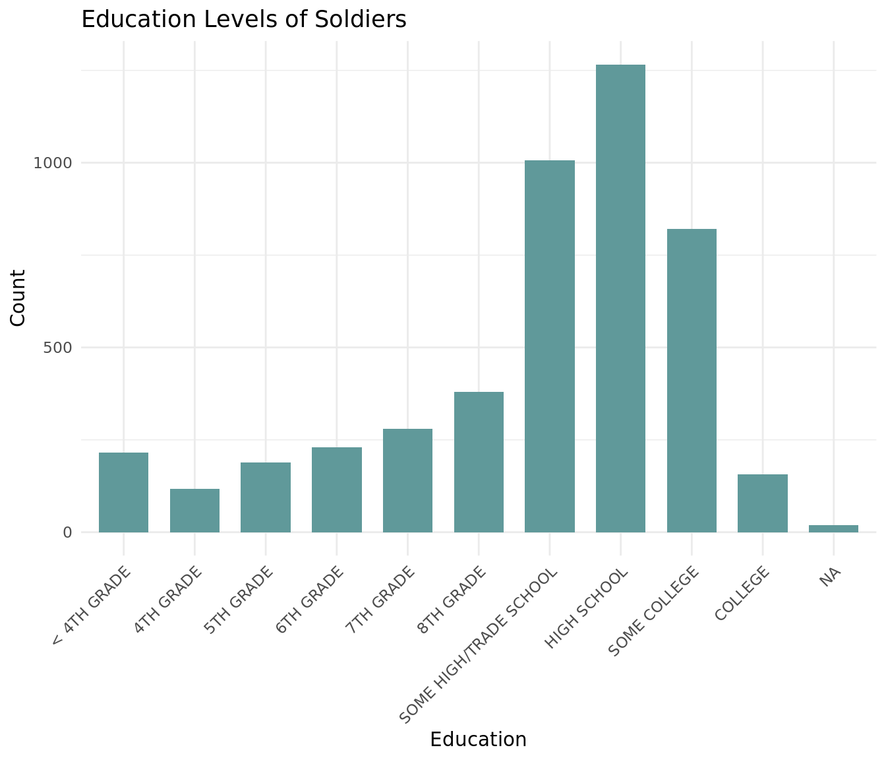
There are no obvious trends between education and age, but we do see that nearly 3/4 of the college educated soldiers are 25 or older which is a larger proportion than the other education levels.
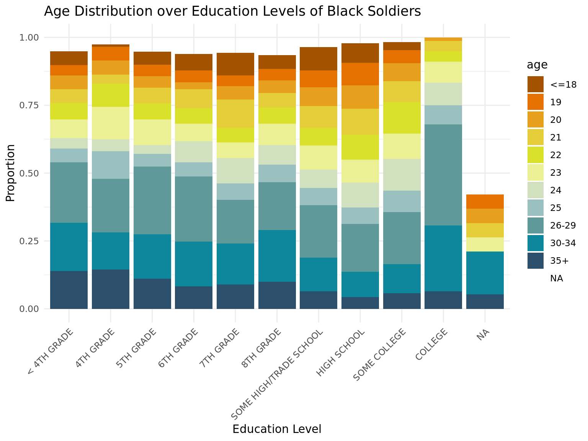
Enlistment
The vast majority of the soldiers were drafted into the military with less than 1000 enlisting via other means.
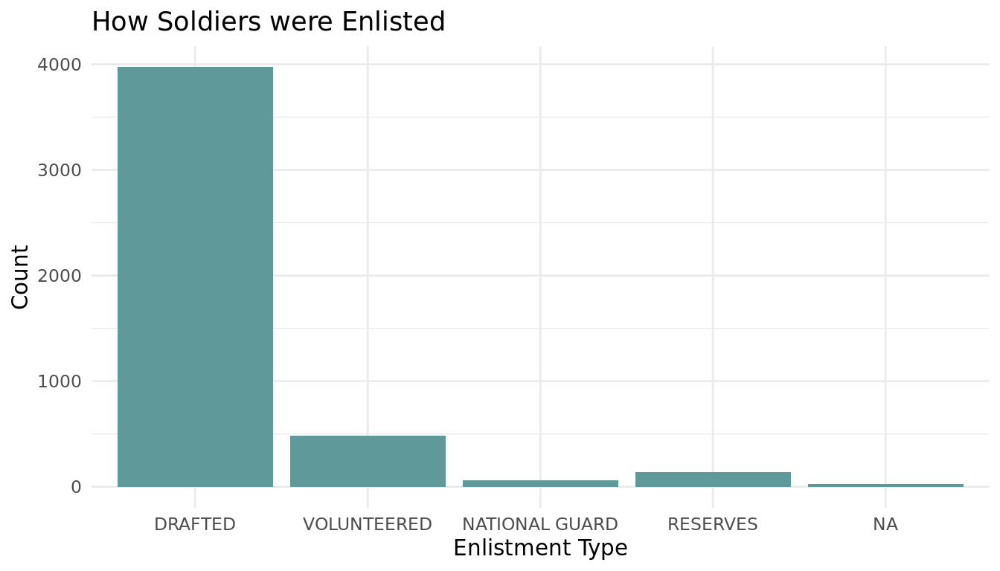
Region
The survey didn't ask for the specific state a soldier was from but rather a region. It appears that most of the soldiers survied where from the East Coast with the most coming from the South Atlantic states.
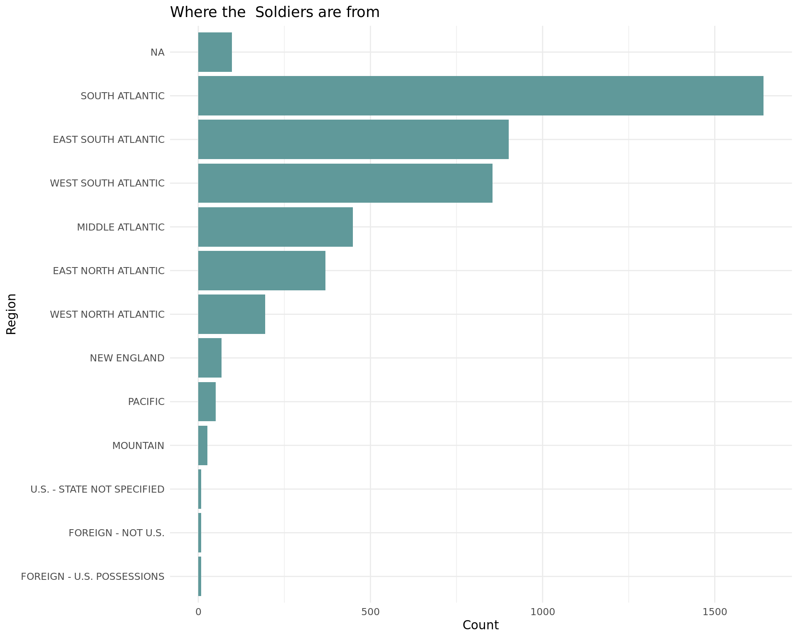
Community
As expected, most soldiers whose home communities are large cities had the most representation. What suprising however is that there are more black soldiers from communities which are farms than those from the countryside or village like places.
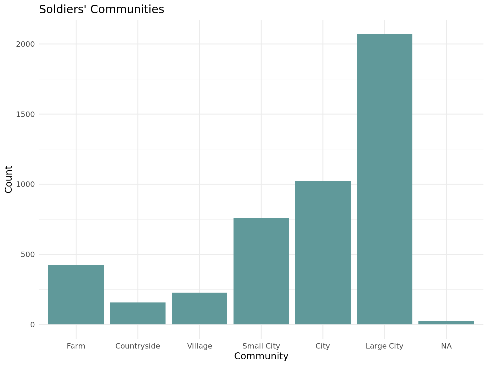
Unsurprisingly, we see that soldiers from from high population communities make up a larger portion of soldiers with higher education levels.
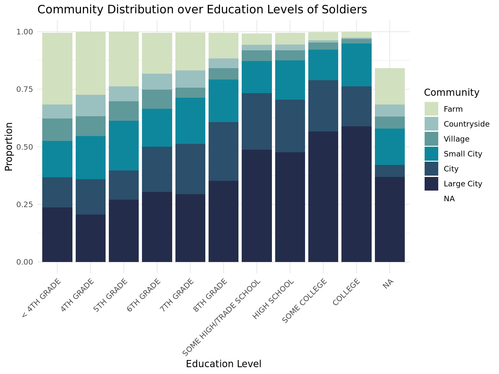
We see that larger portions of soldiers who are more educated come from communities whihc are larger in population.
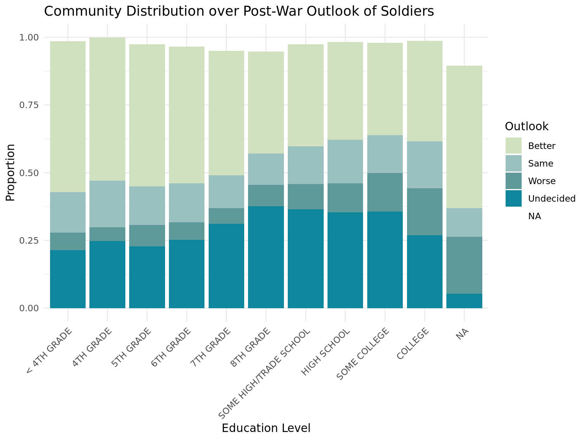
Post-War Outlook
We can see that a good deal of black soldiers think that after the war, things will be better for them than before. However, about 1500 soldiers are also undecided. A significant amount also don't think anything will change or may change for the worse.
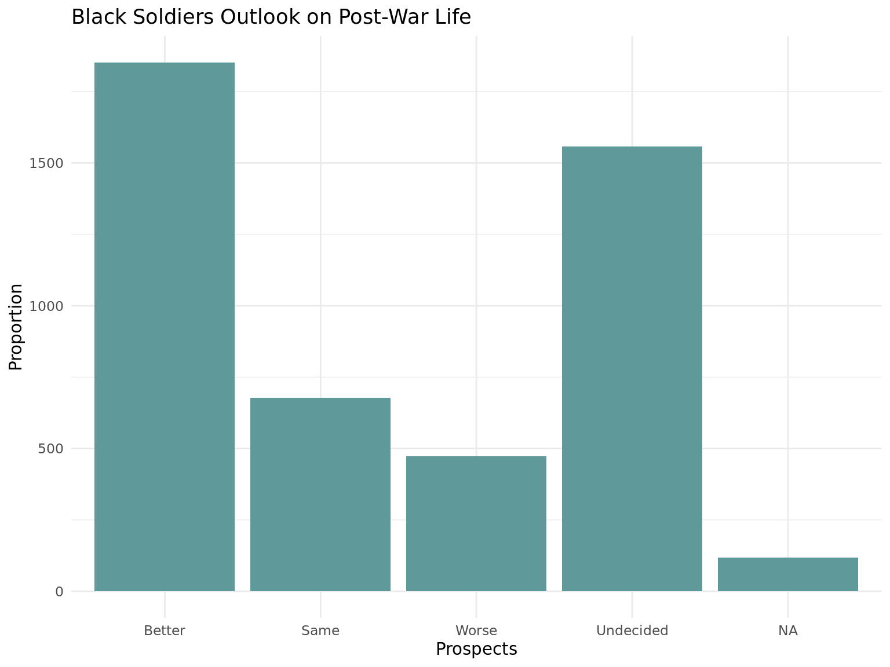
We also can observe that the age distribution is roughly similar along these outlooks. Interestingly, it seems that as the soldiers education level increases the less likely they are to belive things will be better for them after the war. Similarly, soldiers from more populated areas are less likely to have an optimistic outlook for life after the war.
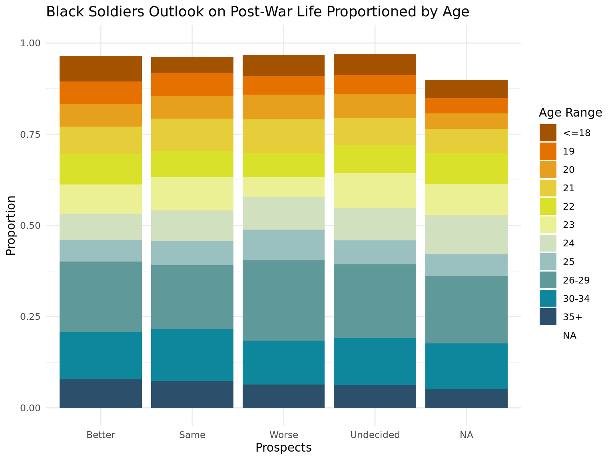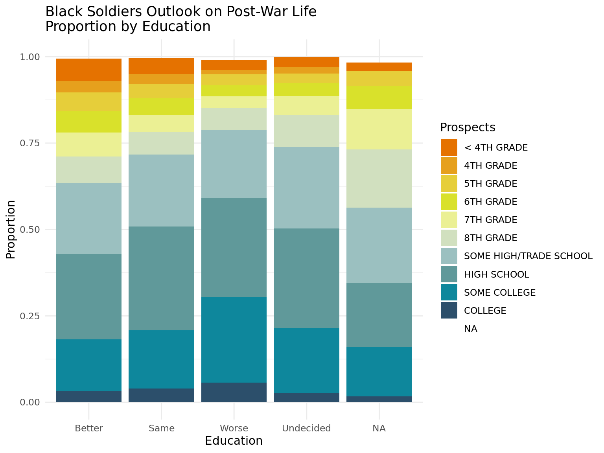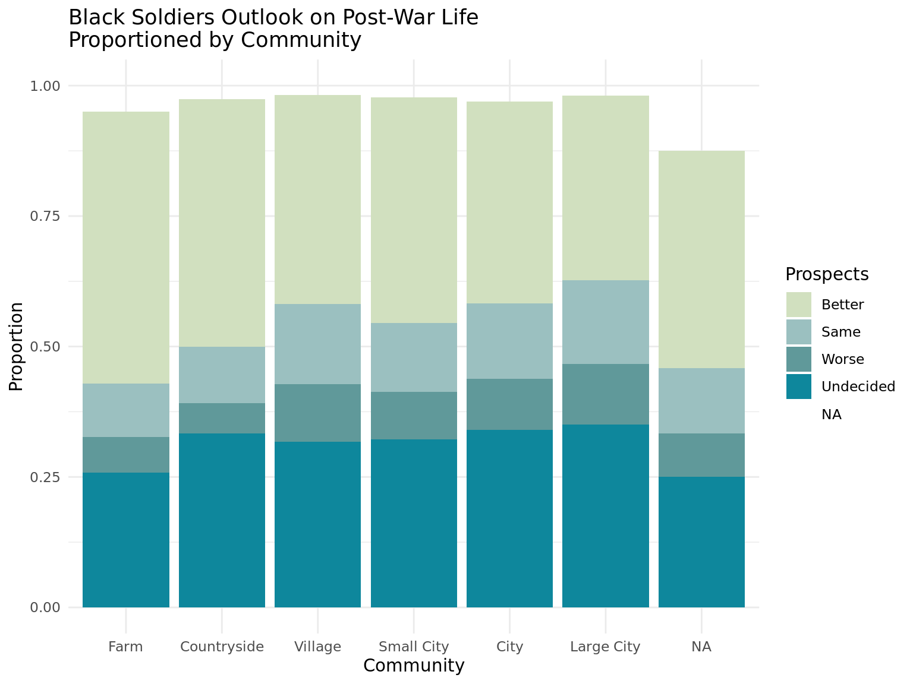